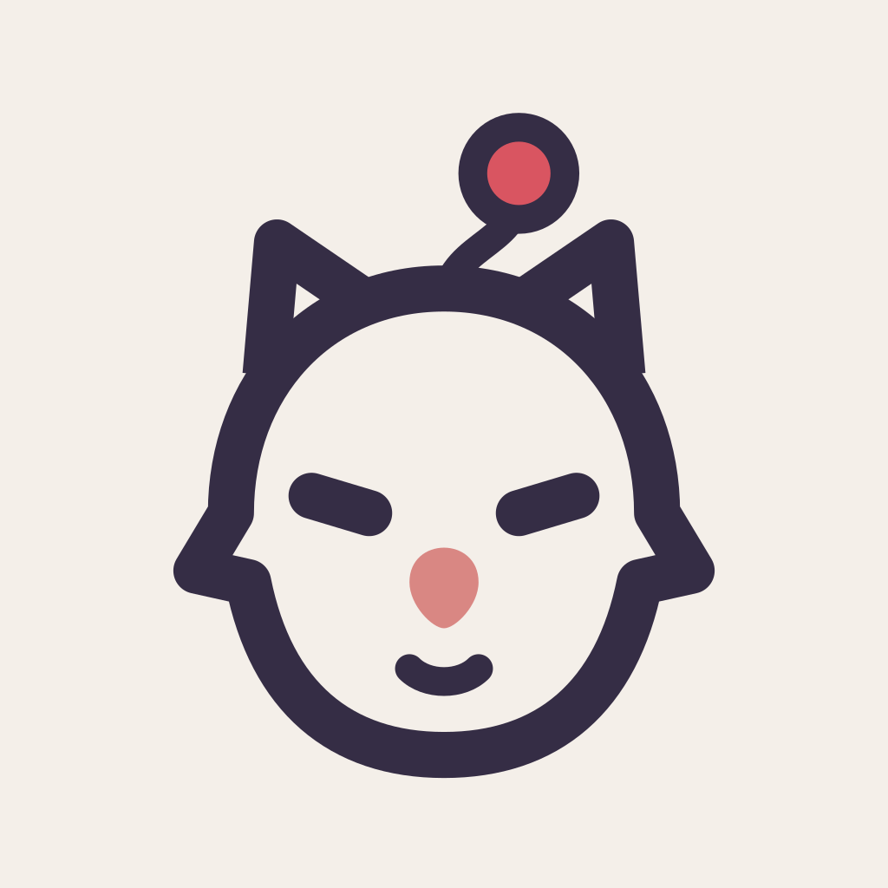

Any model, one workflow
GitHub Copilot, OpenRouter, the Anthropic API, the OpenAI API, a ChatGPT account, OpenAI-compatible endpoints and local models. Kupo can route a task across the models you configured.
Moguri runs AI coding agents from a desktop app, a terminal UI, a CLI and an SDK. You pick the model, where it runs, how much it may do without asking and how much it may spend. One local service on your Mac enforces those choices.
macOS on Apple silicon only. The first public release isn't out yet.
Why Moguri
Moguri is for developers who want AI help on real engineering work without giving up control. The local service enforces approvals, budgets and execution boundaries, so they don't depend on a model following its prompt. Moguri is original code built on maintained open-source libraries, not a fork of another agent.
GitHub Copilot, OpenRouter, the Anthropic API, the OpenAI API, a ChatGPT account, OpenAI-compatible endpoints and local models. Kupo can route a task across the models you configured.
Manual, the default, asks before every command and edit. Guided recommends an answer and you confirm. Autonomous approves tools on its own, and hard policy still wins.
Run on your Mac (Local), in a SendBox VM (Sandbox) or on your own SSH machine (Remote). If the environment you chose isn't available, work stops. Moguri never falls back to Local on its own.
Optional token and USD caps cover every model call. Usage a provider doesn't report shows as unknown, never as zero cost.
Drafts, queued prompts, sessions and artifacts survive restarts and crashes. Stopping work records exactly what was cancelled.
It runs on macOS on Apple silicon only, it's alpha quality, and many advanced workflows are still on the roadmap.
Features
Each screenshot is the real desktop app running Moguri {{VERSION}} with generated test data. Select one to open it at full size.
The composer shows Env, Model, Autonomy level and Budget. A new session starts Local, with no model until you sign in, Manual autonomy and no budget cap. You can change the defaults globally, per profile, per project or per session.
Projects and sessionsWith Manual autonomy, Moguri asks before it runs a command or edits a file. The card shows the exact command, where it runs and whether it's isolated. Approve it once, remember a grant or deny it.
Permissions and executionProject sessions work in managed Git worktrees, not your original checkout. The Code change panel shows the session's diff, and a linked pull request adds its CI and review state.
Tools and integrationsRun a prompt, or a workflow of prompts and repository-trusted scripts, once, every few minutes, daily or on chosen weekdays. Each run starts a new chat in its project with the model, Env, autonomy and budget you saved, and never gets extra permissions. Nothing runs until you turn it on.
Run recurring automationsModels, integrations, boundaries and the interface live in one searchable place. The Settings reference documents every page.
Settings referenceThe Dashboard follows active sessions. Analytics draws recent turns on a zoomable timeline that stays in memory for an hour. Usage and Cost show reported tokens and price estimates.
Models and budgetsPress Cmd+K in the desktop app or Ctrl+K in the terminal UI to find any command. Keyboard shortcuts are configurable in Settings.
CLI and shortcutsInterfaces
Every client talks to one local service through the same typed SDK, so a session you start in the terminal continues in the desktop app.
Conversations, files, code changes, a terminal and Insights sit next to each session. Answer questions and approvals where the work happens.
The TUI opens on a project. Press Ctrl+L to sign in to GitHub Copilot, Ctrl+M to choose a model and Ctrl+K for commands. Leaving the TUI keeps the shared service and its sessions running.
The importable SDK exposes sessions, models, permissions, tools and a native MCP gateway. Moguri's own clients use the same APIs.
It isn't published to a package registry yet.
SDK quickstart
Moguri SDKSessions, models, permissions, toolsStatus
The first milestone was accepted on 15 November 2026 for version 0.32.0-alpha.1, using full local test runs with generated models and fixtures. That proves the controls work. It doesn't measure any provider's answer quality or your real bill.
Get started
Check the download page for the release status and install steps, then follow the user guide. Contributors start with the developer docs.